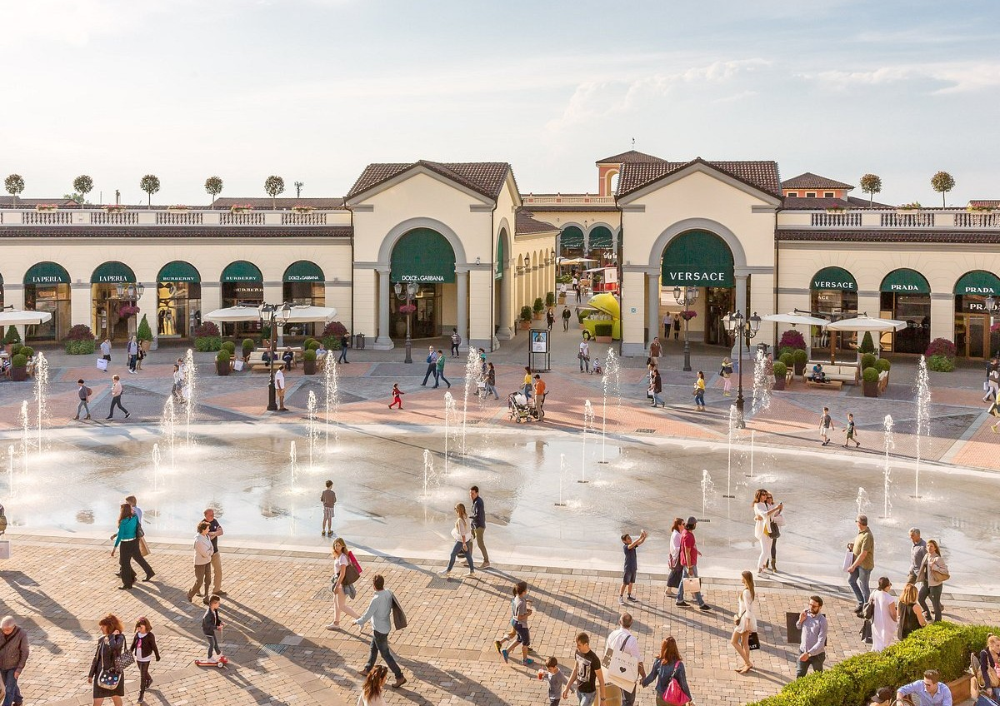
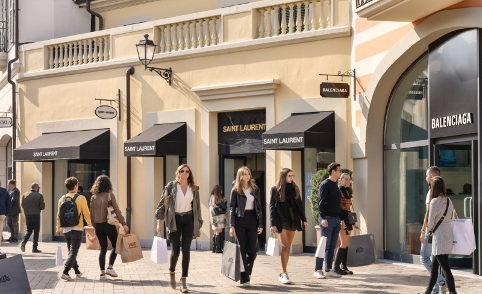
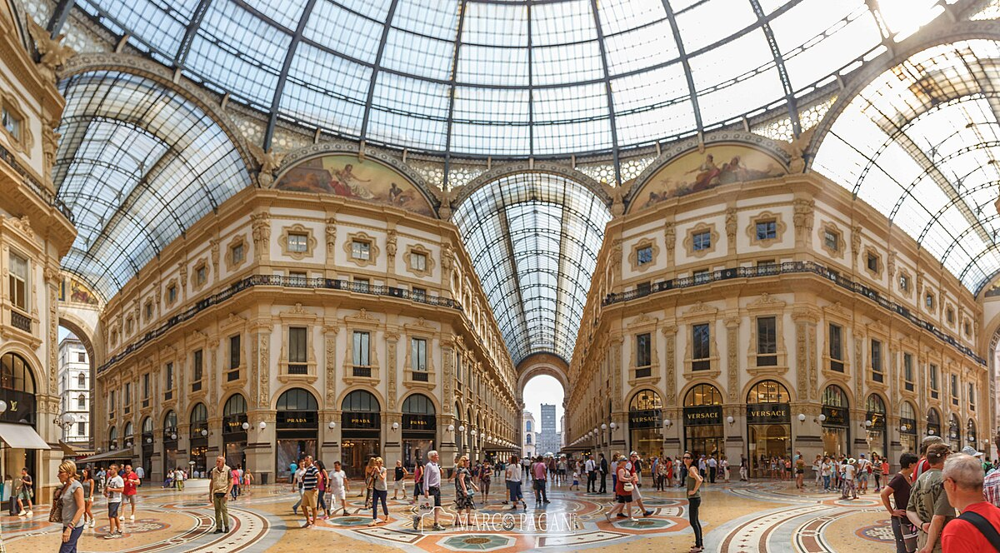
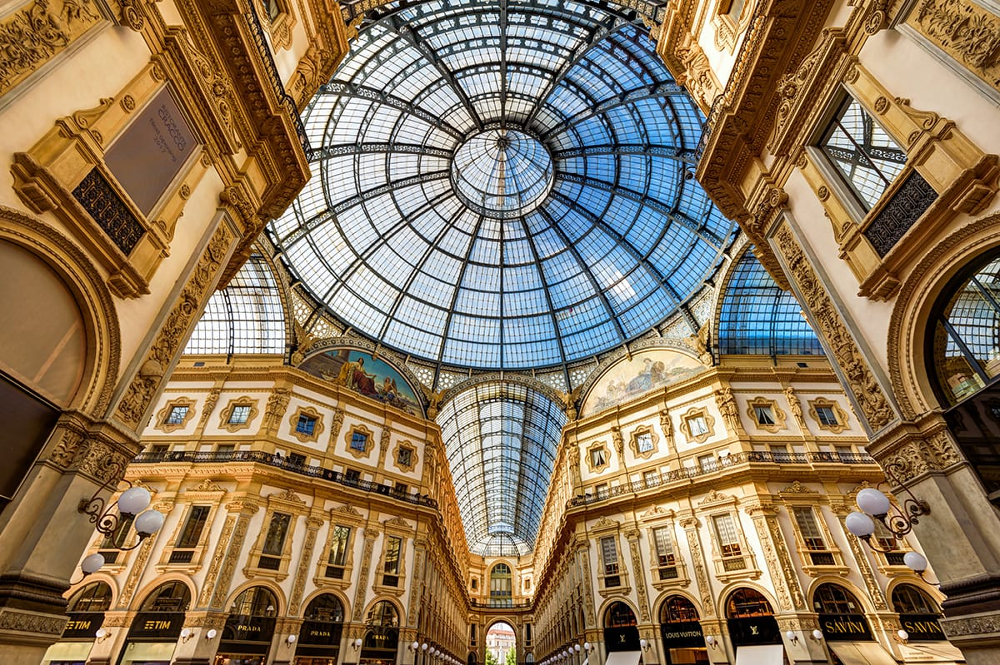

쇼핑
이탈리아 필수 코스!
맛있는 음식도 먹었으니… 이제 쇼핑하러 가볼까요? 😆👜
이탈리아는 패션의 나라답게 쇼핑 천국이 곳곳에 숨어 있어요.
그중에서도 여행자들이 특히 좋아하는 두 곳을 소개할게요!
첫 번째 쇼핑 스폿은… 세라발레 아울렛(Serravalle Outlet)!🛍


밀라노 근교에 있는 유럽 최대 규모의 디자이너 아울렛!
여긴 진짜 하루 종일 쇼핑만 해도 부족할 정도로 브랜드가 엄청 많아요 😂💸
- 프라다, 구찌, 버버리, 토즈 등 명품 브랜드 가득 👜
- 세일 폭이 커서 득템하기 좋은 편! 최대 70% 할인도 자주 등장 🔥
- 아울렛 자체가 작은 마을처럼 꾸며져 있어 산책하듯 쇼핑 가능 🚶♀️✨
쇼핑 좋아하는 분들이라면 일정 중 하루를 통째로 비워 둘 정도의 곳이에요.
진짜 나도 모르게 카드가… 슥… 나오는 곳… 😭💗💳
두 번째 쇼핑 스폿은… 갤러리아 비토리오 에마누엘레 2세!💰


여긴 단순한 쇼핑몰이 아니라 예술 작품 같은 쇼핑 거리예요.
유리 돔 아래로 햇빛이 들어오고, 바닥 모자이크는 너무 아름답고…
이곳을 걷는 것만으로도 럭셔리한 기분이 든답니다 😍✨
- 루이비통, 프라다 등 플래그십 스토어가 쭉~ ⭐
- 실내지만 광장 같은 느낌이라 사진 찍기에도 완전 좋아요 📸
- 두오모 바로 옆이라 여행 동선 짤 때 접근성 최고!
그리고 여긴 그냥 지나치기만 해도 “아… 나 지금 밀라노에 있구나…” 싶어지는 곳!
커피 한 잔 마시기에도 딱 좋고 쇼핑하기에도 최적이에요 ☕✨
세라발레 아울렛에서 득템하고,
갤러리아에서 감성 충만한 쇼핑까지!
이 두 곳만 가도 이탈리아 쇼핑은 거의 완성이라고 해도 돼요 😆👏